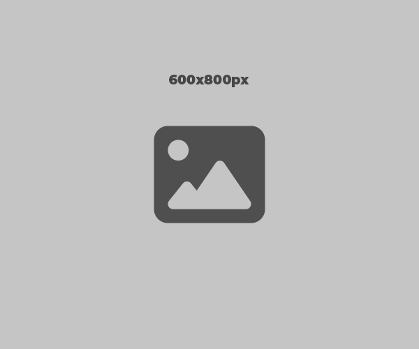

Sobre
Desde 2017 atuando na área de Arquitetura e Interiores, a identidade jovem e descontraída é a característica mais marcante dos nossos projetos. A preocupação com a funcionalidade e integração auxilia na criação de espaços fluídos e versáteis. Soma-se a isso uma linguagem colorida e cheia de bossa, que traz vida e expressividade aos ambientes. Buscamos sempre explorar as diferentes materialidades, texturas e adoramos complementar nossos projetos com mobiliários de design moderno e contemporâneo.
Equipe
Marina Menossi
Arquiteta Sócia

Arquiteta formada pela FAUUSP em 2017 com experiência em projetos de arquitetura e interiores nacionais e internacionais. atou em escritórios como Studio Arthur Casas, Jacobsen Arquitetura e possui pós-graduação em Gestão de Projetos pela FGV.
marina@noss.arq.br
Renan Sampaio
Arquiteto Sócio
Arquiteto formado pela FAUUSP em 2018 com experiência em projetos de arquitetura, edificações e de restauro com diversos usos e escalas, como residenciais, públicos e comerciais. atuou em escritórios como MNMA Studio e Salinas e Freitas. possui mestrado em andamento pela FAUUSP na área de Habitat.
renan@noss.arq.br